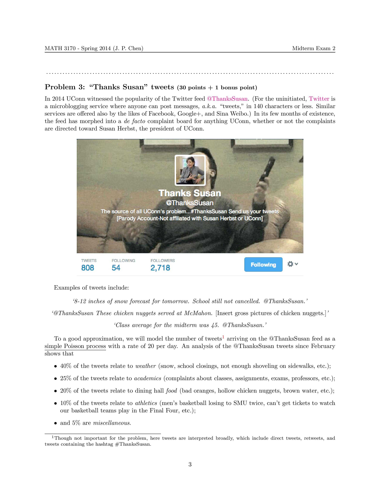
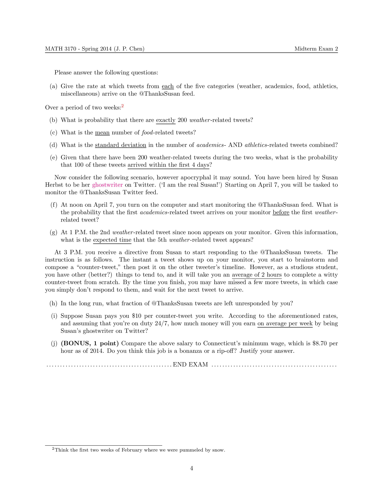

|  |  |
Math concepts used: (Simple and compound) Poisson processes, Wald's identities (for martingales), exponential random variable, renewal-reward theory.
Background: In Spring 2014 UConn saw classes cancelled frequently due to snowstorms. Many students seemed to be annoyed by the fact that the cancellation was not announced in a timely manner, or that the snow on sidewalks was not sufficiently plowed, etc. They took their complaints to the Twitter handle @ThanksSusan, a not-so-subtle dig at the university president Susan Herbst. Activities on the handle peaked around February (the snow) and April (when the UConn men's and women's basketball teams both won titles).
Relevance: If you have read the other problems I've posted already, you won't be surprised at what I'm going to say next. Model the tweets appearing on @ThanksSusan as a Poisson process. Except, since students in MATH 3170 are more educated than those in MATH 3160, they are expected to know more details about the Poisson process. The first question concerns the "thinning" of a compound Poisson process. The last three questions are best answered by considering the compound Poisson process as a renewal-reward process. (If you don't know what I'm talking about here, it's okay. Just remember that all these questions have definite mathematical answers.)
What I did: I wrote this problem which accounted for 60% towards the 2nd midterm exam in MATH 3170, Stochastic Processes. Since the basketball title games were on the horizon, I made the exam take-home so that students wouldn't have any excuse for claiming time/energy conflict with the basketball.
Aftermath: To my great delight, the majority of the students answered the question to near perfection.
{kind=link}
{kind=link}